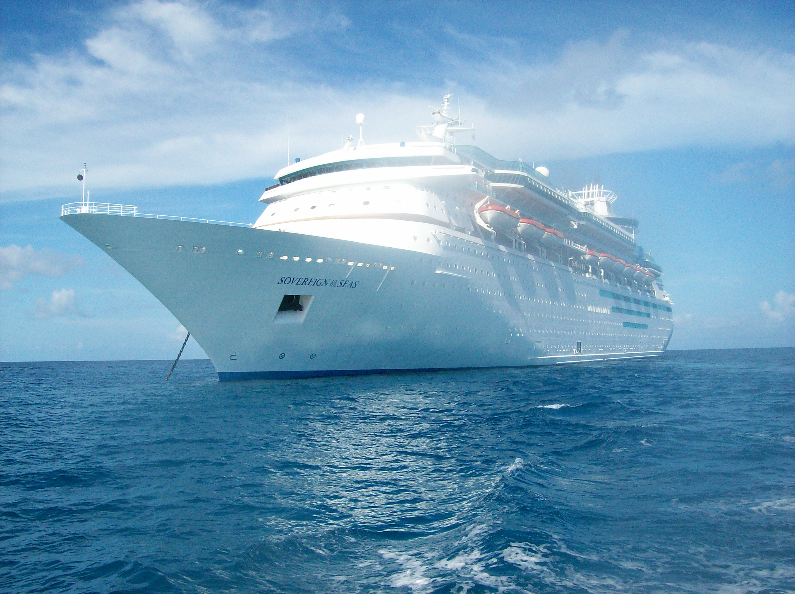
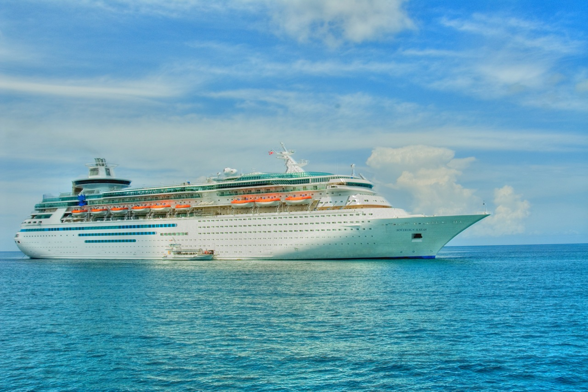

Sovereign of the Seas
This page follows the Grandeur layout. Content can be expanded later.
At a Glance
- Line: Royal Caribbean International
- Ship: Sovereign of the Seas
Photos


Image Credits — Sovereign of the Seas
- “Sovereign of the Seas, Nassau Bahamas (244161813) (cropped)” — via Wikimedia Commons. See file page for photographer and license details.
- “RCI Sovereign of the Seas (cropped)” — via Wikimedia Commons. See file page for photographer and license details.
- “MS Sovereign of the Seas (cropped)” — via Wikimedia Commons. See file page for photographer and license details.